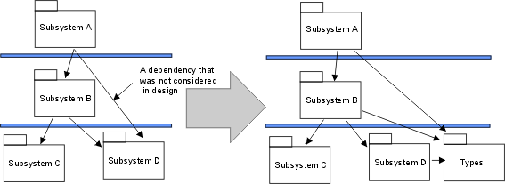
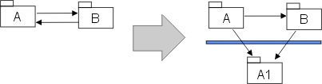

|
Establish the implementation model structure
|
Purpose
|
To establish the structure of the Implementation Model.
|
In moving from the 'design space' to the 'implementation space' start by mirroring the structure of the Design Model in
the Implementation Model.
Design Packages will have corresponding Implementation Subsystems, which will contain one or more directories and files
(Artifact: Implementation Element) needed to implement the corresponding design elements. The mapping from the Design
Model to the Implementation Model may change as each Implementation Subsystem is allocated to a specific layer in the
architecture.
Create a diagram to represent the Implementation Model Structure (see Guidelines: Implementation Diagram).
|
Adjust implementation subsystems
|
Purpose
|
Adapt the structure of the model to reflect team organization or implementation language constraints.
|
Decide whether the organization of subsystems needs to be changed, by addressing small tactical issues related to the
implementation environment. Below are some examples of such tactical issues. Note that if you decide to change the
organization of implementation subsystems you must also decide whether you should go back and update the design model,
or allow design model to differ from the implementation model.
-
Development team organization. The subsystem structure must allow several implementers or teams of
implementers to proceed in parallel without too much overlap and agitation. It is recommended that each
implementation subsystem be the responsibility of one and only one team. This means that you might want to split a
subsystem in two (if it is large), and assign the two pieces to be implemented by two implementers or two teams of
implementers, particularly if the two implementers (or teams) have different build/release cycles.
-
Declarations of types. In implementation you may realize that a subsystem needs to import work products from
a another subsystem, because a type is declared in that subsystem. Typically, this occurs when you use typed
programming languages, such as C++, Java and Ada. In this situation, and in general, it may be a good idea to
extract type declarations into a separate subsystem.
Example
You extract some type declarations from Subsystem D, into a new subsystem Types, to make Subsystem A
independent of changes to the public (visible) work products in Subsystem D.

Type declarations are extracted from Subsystem D
.
-
Existing legacy code and component systems. You may need to incorporate legacy code, a library of reusable
components, or off-the-shelf products. If these have not been modeled in design, then implementation subsystems
must be added.
-
Adjust dependencies. Assume that a subsystem A and a subsystem B have import dependencies to each other.
However, you may want to make B less dependent on changes in subsystem A. Extract the work products of A that B
imports and put in a new implementation subsystem A1 in a lower layer.

Work products are extracted from subsystem A, and placed in a new subsystem A1.
Now that the Implementation Subsystems no longer map one-to-one with packages/subsystems in the Design Model, you can
either make a corresponding change in the Design Model (if you have decided to keep the Design Model closely aligned
with the Implementation Model), or keep track of the mapping between Implementation and Design Models (such as through
traceability or realization dependencies). If and how such mapping is done is a process decision that should be
captured in the  Artifact: Project-Specific Guidelines. Artifact: Project-Specific Guidelines.
|
Define imports for each implementation subsystem
|
Purpose
|
To define dependencies between subsystems.
|
For each subsystem, define which other subsystems it imports. This can be done for whole sets of subsystems, allowing
all subsystems in one layer to import all subsystems in a lower layer. Generally, the dependencies in the
Implementation Model will mirror those of the Design Model, except where the structure of the Implementation Model has
been adjusted (see Adjust implementation subsystems).
Present the layered structure of subsystems in component diagrams.
|
Decide how to treat executable programs (and other derived objects)
|
Executables (and other derived objects) are the result of applying a build process to an implementation subsystem (or
subsystems) or a part thereof, and so logically belong with the implementation subsystem. However, the software
architect, working with the configuration manager, will need to decide the configuration item structure to be applied
to the implementation model.
For ease of selection and reference, particularly for deployment, the default recommendation is to define separate
configuration items to contain the sets of executable programs that are deployable (what executable programs are
deployed on what nodes is captured in the Deployment Model). Thus, in the simple case, for each implementation
subsystem there would be a configuration item for the deployable executable programs and a configuration item to
contain the source etc. used to produce them. The implementation subsystem can be considered to be represented by
a composite configuration item containing these configuration items (and perhaps others, such as test assets).
From a modeling point of view, a collection of executable programs produced by a build process can be represented as a
Artifact: Build (which is a package) contained within the associated
implementation subsystem (itself a package).
|
Decide how to treat test assets
|
Purpose
|
To add test work products to the Implementation Model.
|
In general, test work products and test subsystems are not treated much differently in the Rational Unified Process
from other developed software. However, test work products and subsystems do not usually form part of the deployed
system, and often are not deliverable to the customer. Therefore the default recommendation is to align the test assets
with the target-of-test (e.g. implementation element for unit test, implementation subsystem for integration test,
system for system test) but keep the test assets in, for example, separate test directories, if the project repository
is organized as a set or hierarchy of directories. Distinct test subsystems (intended for testing above the unit test
level) should be treated in the same way as other implementation subsystems - as distinct configuration items.
For modeling, a collection of test work products can be represented as a Artifact: Implementation Subsystem (a package). For unit test, such a
test subsystem would normally be contained within the associated (tested) implementation subsystem. The software
architect, in consultation with the configuration manager should decide whether test work products at this level should
be configured together with the implementation elements they test, or as separate configuration items. For integration
and system test, the test subsystems may be peers of the implementation subsystems under test.
|
Update the implementation view
|
Purpose
|
To update the Implementation View of the Software Architecture Document.
|
The Implementation View is described in the Software Architecture Document. This section contains component
diagrams that show the layers and the allocation of implementation subsystems to layers, as well as import dependencies
between subsystems.
|
Evaluate the implementation model
|